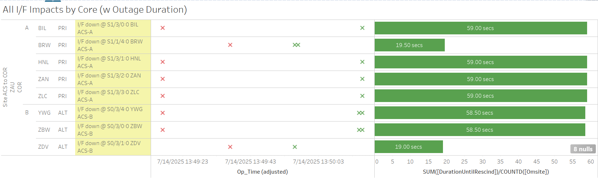
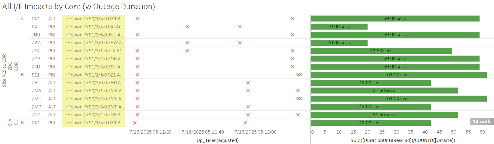

Weekly Highlights 20250709-20250716
7/8-7/16 - MTP WRE Bias Err
- 7/8 23:14 - MTP WRE-A/C alarmed with SE 729 WRE
Bias Err for all C&Vs
- 7/9 00:30 - MTP WRE-A and WRE-C to Maintenance and Restarted to address WRE Bias Err alarms; restored to Normal at 00:55
- 7/13 22:56 - MTP WRE-A and WRE-C received SE 729
WRE Bias Err for all C&Vs
- 7/13 23:24 - Restart MTP WRE-A and WRE-C to address WRE Bias Err; restored to Normal at 7/13 23:44
- 7/14 22:51 - MTP WRE-A and WRE-C received SE 729 WRE Bias Err for all C&Vs
7/9-7/16 - L1/L2 Bias Alarms
- 7/9 00:55 - MTP L1/L2 Bias Error
- 7/9 04:23 - MPR L1/L2 Bias Error
- 7/9 05:36 - MSD L1/L2 Bias Error
- 7/9 21:18 - YFB L1/L2 Bias Error
- 7/11 15:51 - YYR L1/L2 Bias alarm
- 7/12 15:12 - YYR L1/L2 Bias alarm
- 7/13 15:07 - YYR L1/L2 Bias alarm
7/9 - CM1 GUS Maintenance (Replace M&C)
- 7/8 16:00 - GUS Switchover - S15
- Uncommanded Switchover - CM1
to Primary / BR1 to Backup due to Brewster comm
event
- 7/9 09:48 - S15 GEO Selected Source CV change from ZTL->ZLA to restore split selected sources
- 7/9 07:00 - GUS Switchover - S15 - BR1 to Primary / CM1 to Backup in advance of planned maintenance
- 7/9 16:08 - CM1 GUS to Maintenance Mode to replace M&C Server -- ref LIR 1012921724; Control Powered and restored to Backup at 7/9 23:23 -- no loopback verification performed
7/10 - NOC RMD Full
- 7/10 05:29 - NOC O&M RMD Archive Full... changed RMD at 7/10 10:57
7/11 - ZMA WRE-C RF Site Survey
- 7/11 13:20 - ZMA WRE-C returned to Maintenance
after RF Site Survey; restored to Normal
at 7/11 18:54
- ZMA WRE-C - 7/8/25-7/11/25 - RF Site Survey -- ref LIR 1008438924
7/13-7/14 - POC OAC-A Overtemp
- 7/13 02:43 - POC OAC-A alarmed with overtemp SE 231; SE cleared at 7/13 02:53
- 7/14 19:10 - POC OAC-A alarmed with overtemp SE 231; SE cleared at 7/14 19:20
7/14 - SZ1 GUS RFU M&C Comm Fault
- 7/14 06:15 - SZ1 GUS alarmed with SE 1 RFU M&C Comm Fault for ~3 seconds before rescind
7/15 - YFB WRE-C Fault
- 7/15 06:28 - YFB WRE-C Faulted with SEs 29,52,53,59 -- Freq Std alarm code x7; Control Powered and restored to Normal at 7/15 07:37
7/15 - MMX WRE-C Processor Replaced 🎉
- 7/15 18:39 - MMX WRE-C Processor replaced;
restored to Normal at 7/15
19:54
- MMX WRE-C - 5/15/24-7/15/25 - Processor failed and could not be restored -- ref LIR 798352224
Timeline:
- 6/9 - MMX WRE-C processor configured and shipped to Brownsville
- 6/18 - Free Entry Permit Approved
- 7/7 - Delivered to MMX -- SENEAM will coordinate install with WAAS Ops
7/15 - DX1 GUS Fault from Primary -- SM9 Switchover
- 7/15 22:41 - GUS Switchover - SM9
- DX1 Faulted from Primary with SE 191 C1 KPA
Failure / SZ1 to Primary;
C1 KPA Power Control Fault.Site tech swapped in Standby KPA for C1 KPA, will replace failed KPA in the future. -- ref LIR 1017844824; Control Powered, TLT Loopback Verification, and restored to Backup at 7/16 02:05
7/16 - YWG WRE-A Processor Failed
- 7/16 09:36 - YWG WRE-A went to No Data Reported -- apparent processor failure -- ref LIR 1017890724; Processor replaced, configured, and restored to Normal at 7/16 17:08
Various Comm Impacts
* Only captures major / long-term comm outages
CM1 Comms
- 7/9 16:46 - CM1 Ring 2 PRI comms flapping; last events cleared at 7/9 22:17 (~445 seconds total)
- 7/10 17:10 - CM1 Ring 1 PRI / Ring 2 ALT comms
down hard;
ISR 0707-1309-- ref LIR 1011721224... looped...FTI advised they contacted SOCAL Edison for an update. SOCAL advised they are done with testing and have plans to replace two circuit packs. - 7/11 19:07 - CM1 Ring 1 PRI / Ring 2 ALT comms cleared (~79382 seconds)
- 7/11 19:08 - CM1 Ring 2 PRI comms flapping; last event cleared at 7/11 22:17 (~322 seconds total)
- 7/14 15:54 - CM1 Ring 2 PRI comms flapping; last event cleared at 7/15 22:41 (~1227 seconds total)
- 7/15 15:33 - CM1 Ring 2 PRI comms flapping; last event cleared at 7/15 22:24 (~1712 seconds total)
- 7/16 16:00 - CM1 Ring 2 PRI comms flapping; last event cleared at 7/16 23:07 (~1572 seconds total)
Mexico Comms
- 7/9 04:21 - All MX Ring 1 Eth comms down hard; all lines cleared at 7/9 04:23 (~105 seconds)
- 7/9 05:34 - All MX Ring 1 Eth comms down hard; all lines cleared at 7/9 05:36 (~100 seconds)
- 7/10 18:39 - MTP Ring 1 comms down hard; line cleared at 7/10 23:19 (~4h 39m)
- 7/10 23:49 - MTP Ring 1 comms down hard; line cleared at 7/10 23:59 (~9m 56s)
- 7/11 16:43 - MMX Ring 1 comms down hard; line cleared at 7/11 22:49 (~6h 6m)
- 7/13 15:22 - MMX Ring 1 comms down hard; line cleared at 7/14 15:22 (~11h 39m)
- 7/15 18:49 - MTP Ring 1 comms down hard -- OFFLINE...
YYR Comms
- 7/9 21:13 - YYR Ring 1 comms down hard; line came back up to flapping at 7/9 21:40 (~1612 seconds), then last event cleared at 7/9 22:01 (~2200 seconds total)
- 7/11 11:02 - YYR Ring 1 comms flapping; last event cleared at 7/11 22:04 (~884 seconds total)
- 7/12 13:35 - YYR Ring 1 comms flapping; last event cleared at 7/12 16:24 (~1033 seconds total)
- 7/12 18:58 - YYR Ring 1 comms flapping; last event cleared at 7/12 22:35 (~1571 seconds total)
- 7/13 14:45 - YYR Ring 1 comms flapping; last event cleared at 7/13 16:22 (~480 seconds total)
- 7/14 14:38 - YYR Ring 1 comms flapping; last event cleared at 7/14 17:07 (~114 seconds total)
- 7/14 20:48 - YYR Ring 1 comms flapping; last event cleared at 7/14 21:03 (~419 seconds total)
- 7/16 16:07 - YYR Ring 1 comms flapping; last event cleared at 7/16 17:12 (~204 seconds total)
Other Sites
- 7/9 03:59 - ZMA Ring 2 ALT comms down hard; line cleared at 7/9 04:11 (~745 seconds)
- 7/9 21:19 - YFB Ring 1 comms flapping; last event cleared at 7/9 21:28 (~93 seconds total)
- 7/14 13:49 - Minor comm hit affecting multiple sites centered at ZAU for ~59 seconds

- 7/15 08:09 - OTZ Ring 2 PRI comms flapping; last event cleared at 7/15 09:15 (~202 seconds total)
- 7/15 08:23 - BET Ring 1 ALT / Ring 2 PRI comms flapping; last event cleared at 7/16 00:13 (~2849 seconds total)
- 7/15 09:49 - ZSU Ring 1 ALT / Ring 2 PRI comms flapping; last event cleared at 7/15 11:16 (~128 seconds total)
- 7/16 05:11 - Multiple comm hits affecting both ZDC Cores clearing after ~50 seconds

Brewster Comms Down Hard...
- 6/25 09:09 - BR1 Ring 1 ALT / Ring 2 PRI + BR2 Ring 1 ALT / Ring 2 PRI comms down hard...
- Targeting new circuit implementation on 7/22..
Mexico Ring 2 Down Hard...
- Targeting network upgrade in CY26
YFB Ring 2 Down Hard...
YFB requires satcom upgrades by NavCanada to restore... ref LIR 892056924
- 11/6/24 18:48 - YFB Ring 2 down hard... both rings to YFB down hard...
List of current offline WREs
List of current offline WREs -- ref WAAS Status Monitor
All Depot shipments to Mexico are halted until the customs process can be finalized
Currently working to assess MX Inventory to determine equipment refresh and restoration needs...
- YYR WRE-B - 7/4/25-... - Freq Std failed -- ref LIR 1010395424
- MMD WRE-A - 3/31/25-... - Freq Std failed -- ref LIR 953873324
- MTP WRE-B - 11/18/24-... - Receiver inits failing -- ref LIR 898330924
- MMX WRE-A - 10/13/24-... - Freq Std failed -- ref LAD 879853824
- MPR WRE-B - 5/3/24-... - Inits failing -- looks like a bad freq std; due to shipping issues, there is no spare Freq Std and no ETA to recover WRE-B... -- ref LIR 44170821
5/11/23-... - MX Ring 2 Satcom Upgrade
- 5/11/23 17:01 - MX Ring 2 SatCom upgrade begins; MX Ring 2 OFFLINE until upgrade troubleshooting is complete
All sites are currently connected through Tijuana with new cables; but still large UDP data packets (WAAS Multicast) being dropped on Ring 2 -- no further actions to take at Tijuana
- All MX Ring 2 currently down with no ETA...
-
WAAS Second Level assessing situation before further troubleshooting...

Major Events


Core I/F Status

Comm Events

Mexico Comm Status